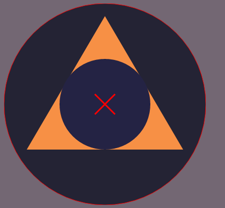
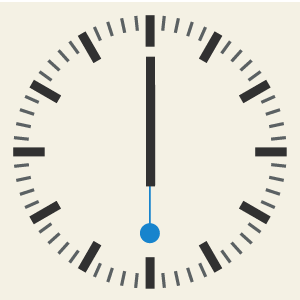

TUTS+ ANIMATING SNAP SVG NOTES
Tuts+ SNAP SVG animations ch1.2
if you want to load < script> in < head> do this...
window.load = function() {
put code in here
}
if you put it at the end of the body, you don't need it.
Creating a new "snap object" is done with
var s = Snap("#snap");
or
var s = Snap(200, 200);
IN SNAP (& svg in general?)...
X and Y coordinates refer to the CENTER of the circle.
< not the top left>
Third item is the radius
var circle = s.circle(X coords, Ycoords, Radius);
Tuts+ SNAP SVG animations ch2.1
the var s = snap('#svg') --or-- snap(300, 300)
is very much like a container...or an SVG "canvas".
I can, then, make a rectangle using the keyword (convention?)
rect which needs
X & Y coords (top left NOT CENTER) and it needs width and height
var s = Snap(400, 200);
var bigCircle = s.circle( 100, 100, 100);
var rect = s.rect(200, 0, 200, 200);
Tuts+ SNAP SVG animations ch2.2
Ellipse
Rounded rectangles
Lines
Polygon
Ellipses are very much like rectangles:
top left coords
--but they also have height and width radii.
var s = Snap(400, 200);
var ellipse = s.ellipse(200, 200, 100, 30);
Rounded rects 2 have more parameters (for X-"roundedness" and Y-"roundedness").
var s = Snap(400, 200);
var rndRect = s.rndRect(200, 200, 100, 100, 20, 20);
or simply...
var rndRect = s.rndRect(200, 200, 100, 100, 20);
Lines have X/Y for start and end
var line = s.line(0, 0, 400, 400)
This would produce nothing visible.
By default shapes have no STROKE.
They Do have a black fill, but no stroke.
Stroke can be produced by the "attr() method".
var line = s.line(0, 0, 400, 400);
line.attr({
stroke: "#F00"
});
This produces a diagonal red line.
Polygons are simply lines connected that end up making a fill.
var poly = s.polyline(0, 200, 100, 50, 200, 50, 300, 200);
the more coords, the more points in our polygon
So, any number of x/y value pairs.
Tuts+ SNAP SVG animations ch2.3 shapes
attr method!
attrs are just like JSON objects
var circle = s.circle(200, 200, 180);
circle.attr({
fill: "#85a3a2",
stroke: "#306bf0",
strokeWidth: 4
});
stroke: "red",
Tuts+ SNAP SVG animations ch2.4 Grouping
attr method!
attrs are just like JSON objects
var circle = s.circle(200, 200, 180);
circle.attr({
fill: "#85a3a2",
stroke: "#306bf0",
strokeWidth: 4
});
stroke: "red", // is also possible

This is achieved by
- creating a canvas
- creating 5 objects
- modifying attrs
- grouping them and/or adding them
var s = Snap(400, 400); // create
var circle = s.circle(200, 200, 200);
circle.attr({
fill: "#242334",
stroke: "red",
strokeWidth: 1
});
var tri = s.polygon(45, 290, 200, 25, 355, 290);
tri.attr({
fill: "#f79045"
});
var incircle = s.circle(200, 200, 90);
incircle.attr({
fill: "#242344",
opacity: 1
});
var line = s.line(180, 180, 220, 220);
var line2 = s.line(220, 180, 180, 220);
line.attr({
stroke: "red",
strokeWidth: 3
});
line2.attr({
stroke: "red",
strokeWidth: 3
});
var crest = s.g(circle, tri, incircle); // grouping
var cross = s.g(line, line2); // grouping
crest.add(cross); // adding or combining to make one object
Tuts+ SNAP SVG animations ch2.5 Transform()
Transform()
Translation
Scale
Rotation
"Transformation string=>
t for translate,
r for rotate,
s for scale"
SCALING
crest.transform("s.5");
We also can provide a "Transformation Origin"
add X/Y coords
SCALING:
crest.transform("s.5, 100, 100");
Let's do a translation with
t!
Translate:
crest.transform("t150, 150");
Let's do a rotation with
r!
Rotate:
crest.transform("r180");
Let's combine them and
Move (translate),
Rotate (with r)
Scale (with s)3 Animations in one line:
crest.transform("t100,0r180s.5");
Tuts+ SNAP SVG animations ch3 Animation Basics
.animate();
.animate({transform: "r45"}, 2000);
This, with an X/Y coord, will be just fine.
crest.animate({transform: "r180, 200, 200"}, 25000);
Great. Now let's move (or "translate") this baby 100px to the right & 1000px down.
crest.animate({transform: "t100, 100"}, 5000);
And, now, let's scale it (around it's X/Y coord);
crest.animate({transform: "s.25, 200, 200"}, 25000);
Let's animate translate and rotate.
crest.animate({transform: "t400, 0r180, 200, 200"}, 25000);
There is a limitation to be aware of
We cannot animate the height of the entire object with "height: 300".
We can, however, 'go into' the object to select one component.
incircle.animate({height: 20}, 2000);
This, however, DID work!
incircle.animate({opacity: 0}, 2000);
Tuts+ SNAP SVG animations: Callbacks
All we need do is insert a callback after the initial animation
as another parameter
incircle.animate({opacity: 0}, 2000, function() {
crest.animate({transform: "r180, 200, 200"}, 5000);
});
We can even nest these. Here are 3 animations with two callbacks.
incircle.animate({opacity: 0}, 2000, function() {
crest.animate({transform: "r180, 200, 200"}, 5000, function() {
incircle.animate({opacity: 1}, 2000);
});
});
tuts+ Snap SVG animation ch 3.3 Easing
Let's revisit this code...
incircle.animate({opacity: 0}, 2000, function() {
crest.animate({transform: "r180, 200, 200"}, 5000,* function() {
incircle.animate({opacity: 1}, 2000);
});
});
*Between duration and callback function we can insert easing
mina.easein
"mina" is "anim" backwards
incircle.animate({opacity: 0}, 2000, function() {
crest.animate({transform: "r180, 200, 200"}, 5000, mina.easein, function() {
incircle.animate({opacity: 1}, 2000);
});
});
tuts+ Snap SVG animation ch 4.2 Using an external SVG File
Declare the var that points to the .svg file.
Load that file with
Snap.load();
< script>
var myIcon = Snap('#myIcon');
Snap.load('myIcon.svg'--location of file, function() {
--this callback will 'operate on' that svg file--
});
< /script>
--html--
< div id="myIcon">
Nothing will render with this code because..?
Nothing connects it to the "myIcon" variable at the first line.
var myIcon = Snap('#myIcon');
By default, the Snap.load() function needs data passed into the subsequent callback.
The Snap object has been created.
Now, we need to 'capture' the data that .load() is sending to the callback.
We use a parameter called "data".
This parameter will be passed into the callback.
Snap.load('myIcon.svg', function(
data) {
We use .append() to feed the "myIcon" object data from that callback.
myIcon
.append(data);
});
< /script>
--html--< div id="myIcon">< /div>
This ought to do the trick:
var myIcon = Snap('#myIcon');
Snap.load('myIcon.svg', function(data) {
myIcon.append(data);
});
Tuts+ SNAP SVG animations ch4.3 External File Manipulation
.select()
click event.
I. Insert the svg div.
< div id="robot">< /div>
II. Create the Snap object with a var &
objectName.
var robo = Snap.('#robot');
III. Snap.load() that sucker with a data param in the callback
fn.
Snap.load('robot.svg', function(data) {
})
IV. 1st line of callback uses
.append(data);
Snap.load('robot.svg', function(data) {
robo.append(data);
})
V. Create an obj. for every component that has an id in the svg file using
objectName.select(#id);
Snap.load('robot.svg', function(data) {
var head = myIcon.select('#circle');
var rArm = myIcon.select('#rect1');
var lArm = myIcon.select('#rect2');
})
VI. Create a click event with
objectName.click(function() {
});
robo.click(function() {
});
VII. In that function, do that voodoo that you do.
myIcon.click(function() {
head.animate({transform: 'r......'}, 1000, mina.elastic);
lArm.animate({transform: 'r......'}, 1000, mina.elastic);
rArm.animate({transform: 'r......'}, 1000, mina.elastic);
});
Tuts+ SNAP SVG animations ch4.4 Hover Event
Hover event
mouseout()
Very simple:
Replace click with hover in the function.
Create function with original state as a "mouseout" event.
myIcon.hover(function() {
house.animate({transform: 's1.2, 100, 100'}, 1000, mina.elastic);
ring.animate({transform: 's1.8, 100, 100'}, 1000, mina.elastic);
bg.animate({opacity: .8}, 200, mina.elastic);
});
myIcon.mouseout(function() {
house.animate({transform: 's1, 100, 100'}, 1000, mina.elastic);
ring.animate({transform: 's1, 100, 100'}, 1000, mina.elastic);
bg.animate({opacity: 1}, 200, mina.elastic);
});
final clock project Chapter 5
Tuts+ SNAP SVG animations ch5.2: .svg files & Date();
I. Window.onload = function() {};
II. Instantiating the Date() obj.
III. Configuring the Date obj.
IV. Fun with modulus.
Links and
srcing files...
In the < head>...
< script src="snap.svg.js">
< script src="main.js">
In the < body>...
< div id="clock">< /div>
In main.js create an obj on a var with Snap()...
var clock = Snap('#clock');
load up that Snap() with a callback~! (This feeds the param 'data' into the function.)
Snap.load('clock.svg', function(data) {
});
Within the callback, append the data to the object on the var on line #1.
Snap.load('clock.svg', function(data) {
clock.append(data);
});
This is a nice start. BUT: what is the main reason that it wont render?
Because the html page needs to load it.
Wrap your code: window.load = function () {...};
Configging the
Date()object...
This creates a friendly date object.
var date = new Date();
Now, pull in the hrs, mins, secs.
var hours = date.getHours();
var mins = date.getMinutes();
var secs = date.getSeconds();
So...
alert(hours); gives us--> 14
alert(mins); gives us--> 55
alert(secs); gives us--> 2
alert(hours+":"+mins+":"+secs); => 15:0:13
14 is military time. So, we use modulus on the hours object.
var hours = date.getHours() % 12;
Tuts+ SNAP SVG animations ch5.3: organizing the code
The plan is to use the time objects and reinterpret them into geometric degrees.
30 secs needs to be 180deg of the secondHand obj
6 hours needs to be 180deg of the hourHand and so on...
First, though, we've got scope problem.
We're going to need to access some of those vars~!
window.onload = function() {
var clock = Snap('#clock');
Snap.load('clock.svg', function(data) {
clock.append(data);
var secondHand = clock.select('#second_hand');
var minuteHand = clock.select('#minute_hand');
var hourHand = clock.select('#hour_hand');
});
var date = new Date();
var hours = date.getHours() % 12;
var mins = date.getMinutes();
var secs = date.getSeconds();
secondHand.transform('r..., ..., ...');
minuteHand.transform('r..., ..., ...');
hourHand.transform('r..., ..., ...');
};
*vars not accessible. Code fails.
All we need to do is refactor a bit.
var clock, secondHand, minuteHand, hourHand;
window.onload = function() {
clock = Snap('#clock');
Snap.load('clock.svg', function(data) {
clock.append(data);
secondHand = clock.select('#second_hand');
minuteHand = clock.select('#minute_hand');
hourHand = clock.select('#hour_hand');
});
var date = new Date();
var hours = date.getHours() % 12;
var mins = date.getMinutes();
var secs = date.getSeconds();
secondHand.transform('r180, 150, 150');
};
This ought to run, but it doesn't :(
Why doesn't this run?
Because the last line runs at the same time that Snap.load() does.... 'clock.svg' hasn't finished loading yet.
The solution?
Put code that transforms min/sec/hourHand into another function, then call that function from within the Snap.load() function!
var clock, secondHand, minuteHand, hourHand;
window.onload = function() {
clock = Snap('#clock');
Snap.load('clock.svg', function(data) {
clock.append(data);
secondHand = clock.select('#second_hand');
minuteHand = clock.select('#minute_hand');
hourHand = clock.select('#hour_hand');
showTime();
});
var date = new Date();
var hours = date.getHours() % 12;
var mins = date.getMinutes();
var secs = date.getSeconds();
};
function showTime() {
secondHand.transform('r180, 150, 150');
}
NICE!
Tuts+ SNAP SVG animations ch5.4: convert time objects to degrees
Topics Covered
1. A function call per second.
2. Dividing time objects into 360 degrees.
Let's take a closer look at that code. Why do we even have a separate
showTime fn?
var clock, secondHand, minuteHand, hourHand;
window.onload = function() {
clock = Snap('#clock');
Snap.load('clock.svg', function(data) {
clock.append(data);
secondHand = clock.select('#second_hand');
minuteHand = clock.select('#minute_hand');
hourHand = clock.select('#hour_hand');
showTime();
});
var date = new Date();
var hours = date.getHours() % 12;
var mins = date.getMinutes();
var secs = date.getSeconds();
};
function showTime() {
secondHand.transform('r180, 150, 150');
}
Why not just put transform-ations into Snap.load()'s callback?
(try to think of a couple of reasons...)
1. Componentization, modularization. Modular code is clean, safe and reusable.
2. This .svg is going to change states every second. It makes good sense to create a component which you can call repeatedly with showTime();
In fact, we should place the var declarations for the 'date.get()-methods' all in that function as well.
function showTime() {
var date = new Date();
var hours = date.getHours() % 12;
var mins = date.getMinutes();
var secs = date.getSeconds();
secondHand.transform('r180, 150, 150');
}
It even looks nicer... :)
The simple angles of a clock-face
360 degrees.
60 seconds.divide 360 by 60 = 6deg
date.getSeconds() value must be multiplied by 6
This will give us the full 360 degrees.
So, we change the line:var secs = date.getSeconds() * (360 / 60);
Or:var secs = date.getSeconds() * 6;
For minutes its the same:var mins = date.getMinutes() * 6;
Lastly, hours is 12. So 12 parts of 360.
var hours = (date.getHours()%12) * (360 / 12);
Or:var hours = (date.getHours() % 12) * 30;
The hour hand moves 30 degrees each hour in a 12-hour cycle
We can update our showTime function...
function showTime() {
var date = new Date();
var hours = (date.getHours() % 12) * 30;
var mins = date.getMinutes() * 6;
var secs = date.getSeconds() * 6;
secondHand.transform('r180, 150, 150');
}
For the transform, only the rotation value must change.
secondHand.transform('r
180, 150, 150');
We need everything but the rotation value to remain the same.
We use a concatenation technique.
secondHand.transform("r" + someValue + ", 150, 150");
someValue is a placeholder for a degree of rotation.
In fact, we've already got values like this in the code directly above! All we need to do is plug them in!
secondHand.transform("r" + secs + ", 150, 150");
minuteHand.transform("r" + mins + ", 150, 150");
hourHand.transform("r" + hours + ", 150, 150");
So, let's update this code and have a look!
// main.js
var clock, secondHand, minuteHand, hourHand;
window.onload = function() {
clock = Snap('#clock');
Snap.load('clock.svg', function(data) {
clock.append(data);
secondHand = clock.select('#second_hand');
minuteHand = clock.select('#minute_hand');
hourHand = clock.select('#hour_hand');
showTime();
});
};
function showTime() {
var date = new Date();
var hours = (date.getHours() % 12) * 30;
var mins = date.getMinutes() * 6;
var secs = date.getSeconds() * 6;
secondHand.transform("r" + secs + ", 150, 150");
minuteHand.transform("r" + mins + ", 150, 150");
hourHand.transform("r" + hours + ", 150, 150");
}
It's useful.
But...it only gives us accurate time at time of window.onload();
We need to create some kind of loop that keeps checking for change every second.
Tuts+ SNAP SVG animations ch5.5: setInterval()
calling a fn over and over again
Incredibly easy.
1. create a timer on a var
var timer =
2. have that var equal to the setInterval() js method
var timer = setInterval();
3. feed in the function to be updated
var timer = setInterval(showTime);
4. indicate the time interval to let javascript know how often it should be called
var timer = setInterval(showTime, 1000);
Snap.load('clock.svg', function(data) {
clock.append(data);
secondHand = clock.select('#second_hand');
minuteHand = clock.select('#minute_hand');
hourHand = clock.select('#hour_hand');
var timer = setInterval(showTime, 1000);
});
This is great!
But... on the hour, there is no animation of the hourhand.
It simply jumps 30 degrees every 60 minutes.
In fact, there is no animation in this clock AT ALL! Everything is simply jumping from one angle to the next calculated angle.
Tuts+ SNAP SVG animations ch5.6: animating the hands.
creating an .animate(); method from a
.transform(); method
inserting a transformation string
We have the following:
secondHand.transform("r" + secs + ", 150, 150");
Instead of just transforming it, we want to animate it.
Within this showTime() function (that is called every second), we need an animation whose
duration is 1000ms.
secondHand.animate({}, 1000);
Now, within those {} all we need to insert is a transformation string (from the original
transform("r" + secs + ", 150, 150") code).
secondHand.animate({transform: "r" + secs + ", 150, 150"}, 1000);
Now this is fine, but we have a problem.
When second hand reaches 360degrees it resets to 6degrees &
swings back counter-clockwise(!!) to the one second mark.
We need a var that tracks the seconds value.
We then need an if statement that says "when that counter is zero then counter++".
Tuts+ SNAP SVG animations ch5.~~~~~:
stuff
to
list
code stuff
some more code stuff
Placeholder Placeholder Placeholder
Placeholder Placeholder Placeholder
Placeholder Placeholder Placeholder